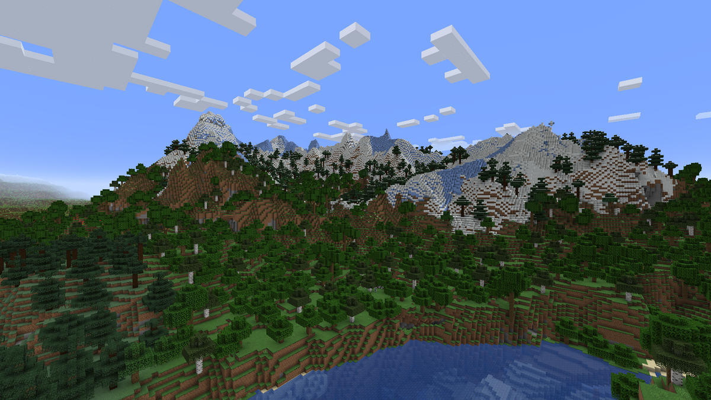
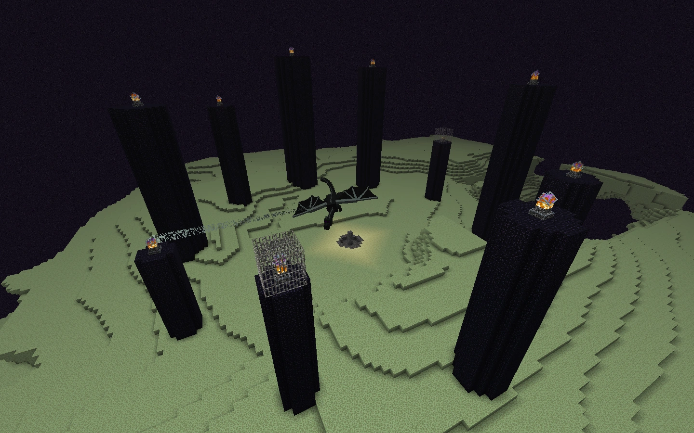

Minecraft Dimensions |
||
 |
||
Overworld
The primary dimension where players spawn. It's a diverse environment with forests, mountains, oceans, and caves. Players gather resources, build structures, and prepare for further adventures.



Nether
A fiery, hostile dimension accessed through Nether portals. It features unique biomes, mobs, and resources like Netherite and Blaze Rods, critical for progression in the game. Beware of lava and dangerous mobs like Ghasts and Piglins.


The End
A barren, otherworldly dimension where the Ender Dragon resides. Players must navigate floating islands and face challenges to defeat the dragon and complete the game. Post-victory, players can explore End Cities and find Elytra for flight.

